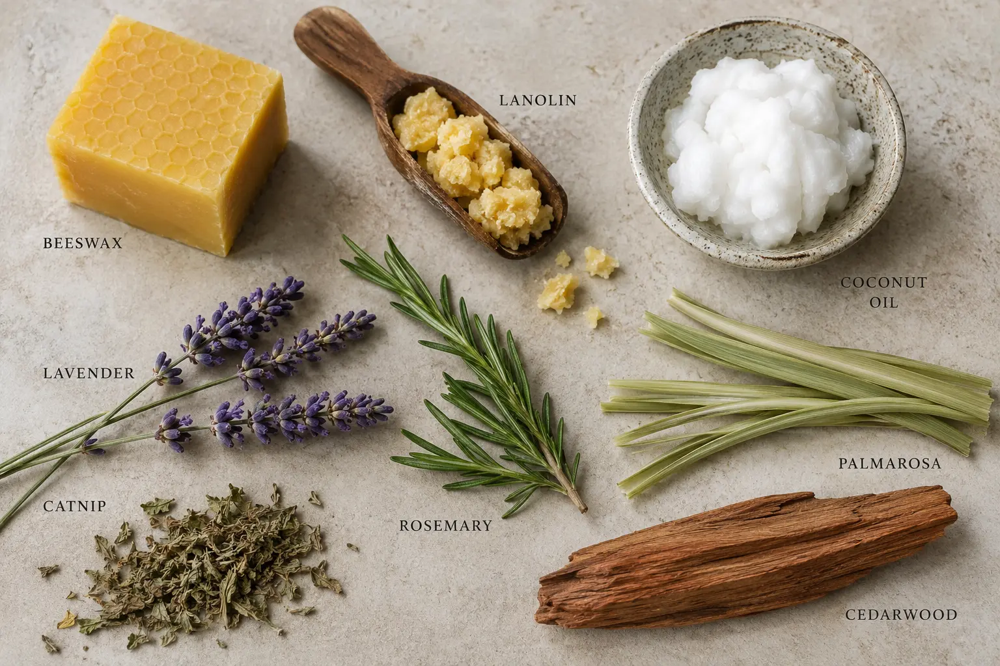

After years of living and working on the land in the Sierra Nevada Foothills, we got tired of the bites. We’ve tried every remedy we could find—even the sprays that claimed they were specifically for no see-ums, and we'd still end up getting bitten all day and covered in welts in the evening. Those watery sprays just don’t stand up to the heat or the biting gnats that come out of our clay soil.
We built Rancher Shield because we needed a barrier that would actually stay on for hours, even through sweat and intense heat. This isn't a thin, watery mist; it’s a thick, beeswax, lanolin and coconut based shield with no water and no fillers. It physically blocks the bite while the scent helps hide you from the pests. An added benefit of Rancher Shield is that it also works great for soothing dry, cracked skin. From the biting gnats out in the pasture to the no see-ums that find you in the evenings, this shield works as hard as you do through the long days and late evenings.
100% Active Ingredients. No Fillers.

Rancher Shield is based on peer-reviewed research from the top agricultural and medical institutions in the world. We use real data to solve real foothill problems.
We built this for the rancher and the ranch dog alike. Our non-toxic formula is safe for your four-legged partners. Whether it's protecting them with a physical barrier against biting insects or soothing dry, irritated skin or hotspots at the base of the tail, Rancher Shield provides a clean, effective barrier. *Safe for dogs and horses, perform a small skin test first. Not for use on cats.
Because Rancher Shield is a 100% active botanical product, you may occasionally see tiny, shiny beads of oil on the surface of the balm. In the industry, this is called "sweating," and it is a sign of a high quality, pure balm or salve.
Mass-market sprays and balms use synthetic silica or plasticizing polymers—essentially liquid plastics—to stabilize their formulas so they look "perfect" even in extreme heat. We refuse to put those chemicals in our tins. Because our shield is 100% strength with zero fillers, the pure botanical oils may bead on the surface if the tin gets warm in a truck or a pocket. This is just the "good stuff" coming to the top and doesn't affect potency. Simply rub it into your skin; it won't affect Rancher Shield's performance one bit.
Hand-Poured 2oz Small-Batch Tin | Introductory Price - $20.00 (Regularly $22.00)
Local Pickup Available in Shingle Springs, CA
Order Yours Today